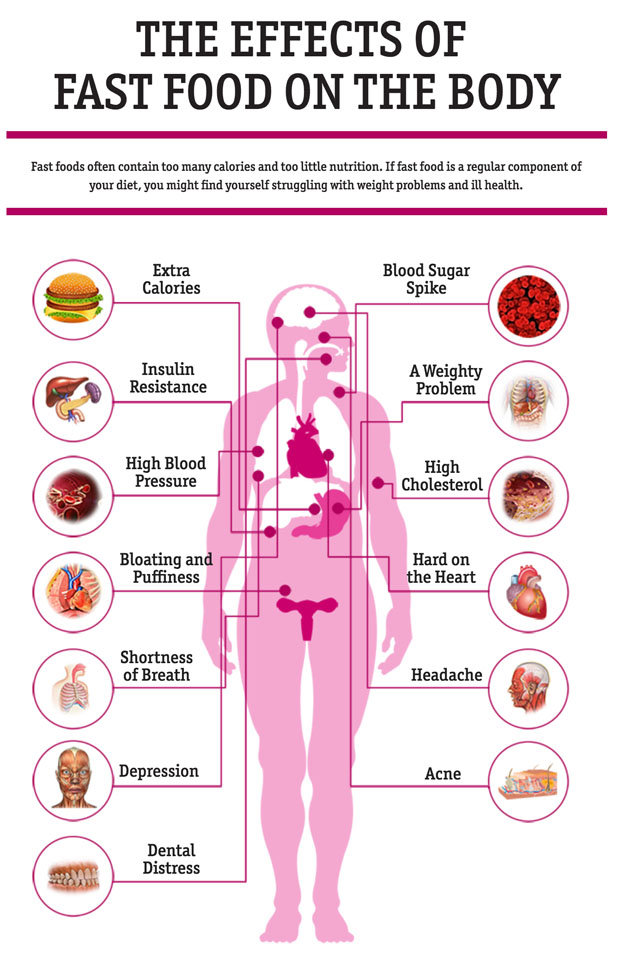
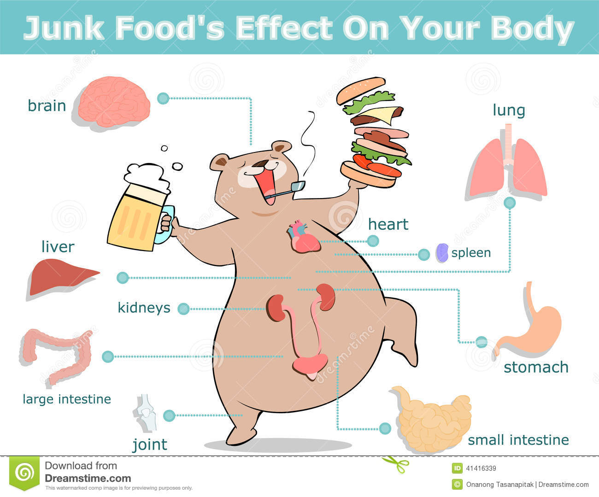
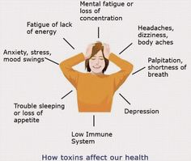
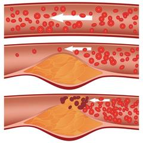
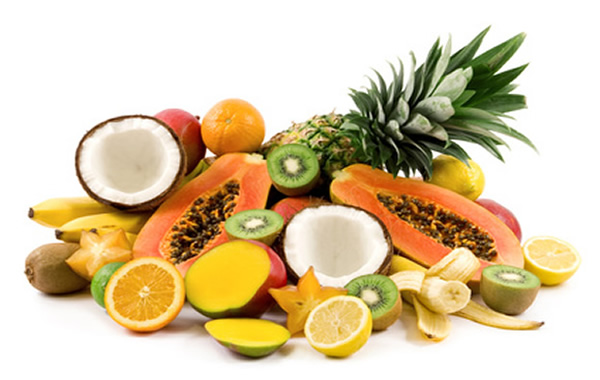
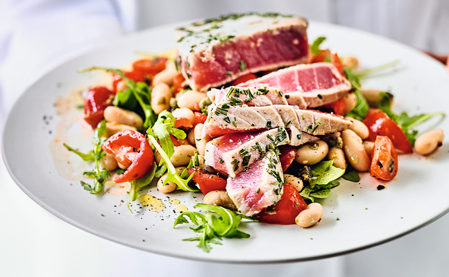
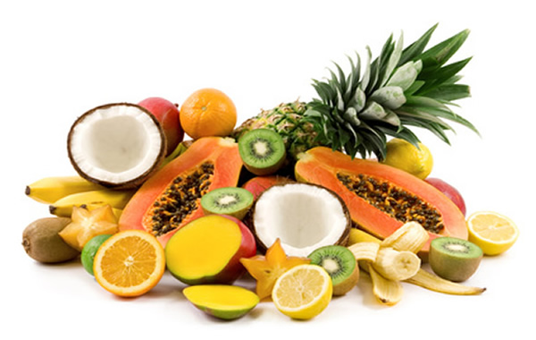
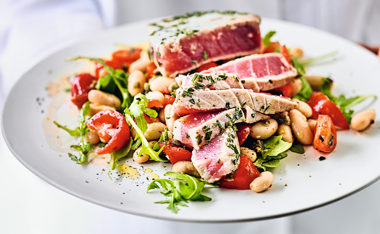
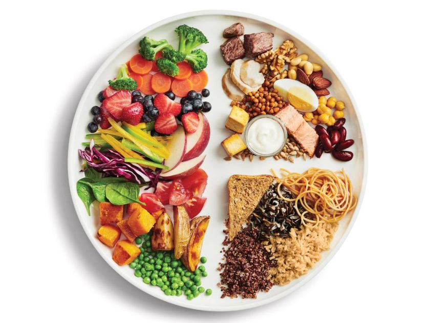
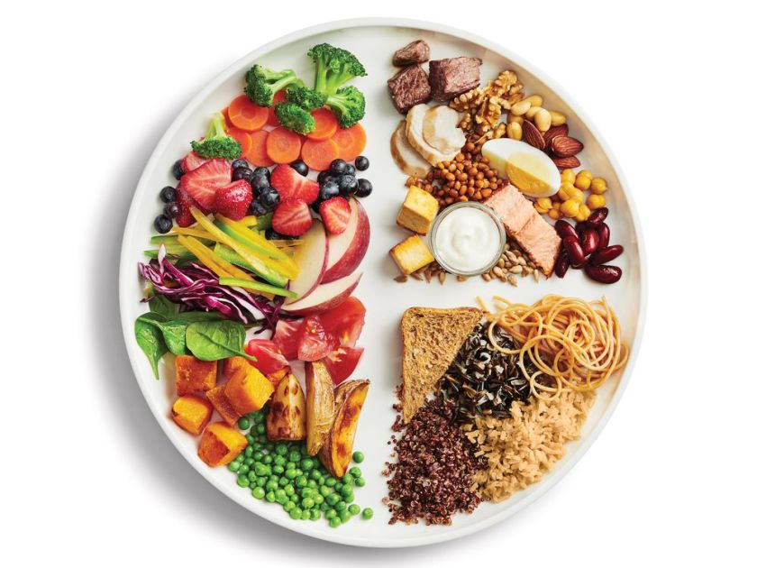

copy right ©2019, Junk Food & Healthy Food
all rights reserved
developed & maintained by RANJAN PANIGRAHI
Junk food is a pejorative term, dating back at least to the 1950s, describing food that is high in calories from sugar or fat, with little dietary fiber, protein, vitamins or minerals. It can also refer to high protein food like meat prepared with saturated fat.[5] The term HFSS foods (high in fat, salt and sugar) is used synonymously.Fast food and fast food restaurants are often equated with junk food, although fast foods cannot be categorically described as junk food. Concerns about the negative health effects resulting from a junk food-heavy diet, especially obesity, have resulted in public health awareness campaigns, and restrictions on advertising and sale in several countries


In Andrew F. Smith's Encyclopedia of Junk Food and Fast Food, junk food is defined as "those commercial products, including candy, bakery goods, ice cream, salty snacks and soft drinks, which have little or no nutritional value but do have plenty of calories, salt, and fats. While not all fast foods are junk foods, most are. Fast foods are ready-to-eat foods served promptly after ordering. Some fast foods are high in calories and low in nutritional value, while other fast foods, such as salads, may be low in calories and high in nutritional value."[8] Junk food provides empty calories, supplying little or none of the protein, vitamins, or minerals required for a nutritious diet. Many foods, such as hamburgers, pizza, and tacos, can be considered either healthy or junk food, depending on their ingredients and preparation methods. The more highly processed items usually fall under the junk food category, including breakfast cereals that are mostly sugar or high fructose corn syrup and white flour or milled corn
The United Kingdom's Advertising Standards Authority, the self-regulatory agency for the UK ad industry, uses nutrient profiling to define junk food. Foods are scored for "A" nutrients (energy, saturated fat, total sugar and sodium) and "C" nutrients (fruit, vegetables and nut content, fiber and protein). The difference between A and C scores determines whether a food or beverage is categorized as HFSS (high in fat, salt and sugar; a term synonymous with junk food)
| 1 st Junk Food Videos | 2 nd Junk Food Videos |
|---|
When junk food is consumed very often, the excess fat, simple carbohydrates, and processed sugar found in junk food contributes to an increased risk of obesity, cardiovascular disease, and many other chronic health conditions. A case study on consumption of fast foods in Ghana suggested a direct correlation between consumption of junk food and obesity rates. The report asserts that obesity resulted in related complex health concerns such upsurge of heart attack rates. Studies reveal that as early as the age of 30, arteries could begin clogging and lay the groundwork for future heart attacks.Consumers also tend to eat too much in one sitting, and those who have satisfied their appetite with junk food are less likely to eat healthy foods like fruit or vegetables. Testing on rats has indicated negative effects of junk food that may manifest likewise in people. A Scripps Research Institute study in 2008 suggested that junk food consumption alters brain activity in a manner similar to addictive drugs like cocaine and heroin. After many weeks with unlimited access to junk food, the pleasure centers of rat brains became desensitized, requiring more food for pleasure; after the junk food was taken away and replaced with a healthy diet, the rats starved for two weeks instead of eating nutritious fare. A 2007 study in the British Journal of Nutrition found that female rats who eat junk food during pregnancy increased the likelihood of unhealthy eating habits in their offspring. Other research has been done on the impact of sugary foods on emotional health in humans, and has suggested that consumption of junk food can negatively impact energy levels and emotional well-being. In a study published in the European Journal of Clinical Nutrition, the frequency of consumption of 57 foods/drinks of 4000 children at the age of four and a half were collected by maternal report. At age seven, the 4000 children were given the Strengths and Difficulties Questionnaire (SDQ), with five scales: hyperactivity, conduct problems, peer problems, emotional symptoms and pro-social behavior. A one standard deviation increase in junk food was then linked to excessive hyperactivity in 33% of the subjects, leading to the conclusion that children consuming excess junk food at the age of seven are more likely to be in the top third of the hyperactivity scale. There was no significant correlation between junk food and the other scales.
   Health food is a marketing term to suggest human health effects beyond a normal healthy diet required for human nutrition. Foods marketed as health foods may be part of one or more categories, such as natural foods, organic foods, whole foods, vegetarian foods or dietary supplements.[citation needed] These products may be sold in health food stores or in the health food or organic sections of grocery stores. While there is no precise definition for "health food", the United States Food and Drug Administration monitors and warns food manufacturers against labeling foods as having specific health effects when no evidence exists to support such statements.

 




 
